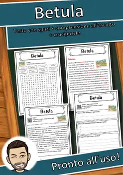
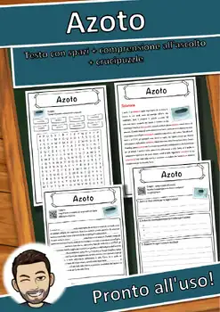
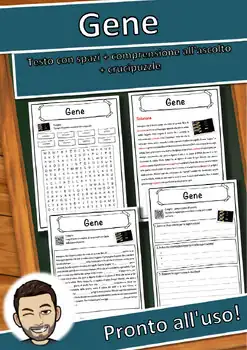

Reading Comprehension Worksheets – 9th Grade
1186 Reading Comprehension Worksheets resources for 9th Grade, ready to print: Ghana, Geyser, Ermes, Efesto and more. Each resource page shows the grade range, page count and a preview and links straight to the product on TpT.
1,186 resources

Ghana – Italian Reading Comprehension Worksheet (Scheda): Cloze & Listening

Geyser – Italian Reading Comprehension Worksheet (Scheda): Cloze & Listening

Ermes – Italian Reading Comprehension Worksheet (Scheda): Cloze & Listening

Efesto – Italian Reading Comprehension Worksheet (Scheda): Cloze & Listening

Fegato – Italian Reading Comprehension Worksheet (Scheda): Cloze & Listening
Evoluzione – Italian Reading Comprehension Worksheet (Scheda): Cloze & Listening

Etiopia – Italian Reading Comprehension Worksheet (Scheda): Cloze & Listening

Estia – Italian Reading Comprehension Worksheet (Scheda): Cloze & Listening

Economia – Italian Reading Comprehension Worksheet (Scheda): Cloze & Listening
Domatore – Italian Reading Comprehension Worksheet (Scheda): Cloze & Listening

Compasso – Italian Reading Comprehension Worksheet (Scheda): Cloze & Listening

Coboldo – Italian Reading Comprehension Worksheet (Scheda): Cloze & Listening

Cittadino – Italian Reading Comprehension Worksheet (Scheda): Cloze & Listening

Circo – Italian Reading Comprehension Worksheet (Scheda): Cloze & Listening

Capo Verde – Italian Reading Comprehension Worksheet (Scheda): Cloze & Listening

Betula – Italian Reading Comprehension Worksheet (Scheda): Cloze & Listening
Cesio – Italian Reading Comprehension Worksheet (Scheda): Cloze & Listening

Carinzia – Italian Reading Comprehension Worksheet (Scheda): Cloze & Listening

Buco nero – Italian Reading Comprehension Worksheet (Scheda): Cloze & Listening
Bubo bubo – Italian Reading Comprehension Worksheet (Scheda): Cloze & Listening

Brevetto – Italian Reading Comprehension Worksheet (Scheda): Cloze & Listening

Berkelio – Italian Reading Comprehension Worksheet (Scheda): Cloze & Listening

Beat – Italian Reading Comprehension Worksheet (Scheda): Cloze & Listening

Battaglia – Italian Reading Comprehension Worksheet (Scheda): Cloze & Listening

Atena – Italian Reading Comprehension Worksheet (Scheda): Cloze & Listening

Bario – Italian Reading Comprehension Worksheet (Scheda): Cloze & Listening

Azoto – Italian Reading Comprehension Worksheet (Scheda): Cloze & Listening

Attinio – Italian Reading Comprehension Worksheet (Scheda): Cloze & Listening

Arma – Italian Reading Comprehension Worksheet (Scheda): Cloze & Listening

Aria – Italian Reading Comprehension Worksheet (Scheda): Cloze & Listening

Arbitro – Italian Reading Comprehension Worksheet (Scheda): Cloze & Listening

Apollo – Italian Reading Comprehension Worksheet (Scheda): Cloze & Listening

Afrodite – Italian Reading Comprehension Worksheet (Scheda): Cloze & Listening

Alabarda – Italian Reading Comprehension Worksheet (Scheda): Cloze & Listening

Aggettivo – Italian Reading Comprehension Worksheet (Scheda): Cloze & Listening

Ade – Italian Reading Comprehension Worksheet (Scheda): Cloze & Listening
Germanio – Italian Reading Comprehension Worksheet (Scheda): Cloze & Listening

Germani – Italian Reading Comprehension Worksheet (Scheda): Cloze & Listening

Georgia – Italian Reading Comprehension Worksheet (Scheda): Cloze & Listening

Geometria – Italian Reading Comprehension Worksheet (Scheda): Cloze & Listening

Geocaching – Italian Reading Comprehension Worksheet (Scheda): Cloze & Listening

Genova – Italian Reading Comprehension Worksheet (Scheda): Cloze & Listening
Genere – Italian Reading Comprehension Worksheet (Scheda): Cloze & Listening

Gene – Italian Reading Comprehension Worksheet (Scheda): Cloze & Listening

Gemma – Italian Reading Comprehension Worksheet (Scheda): Cloze & Listening

Gemelli – Italian Reading Comprehension Worksheet (Scheda): Cloze & Listening

Gelo – Italian Reading Comprehension Worksheet (Scheda): Cloze & Listening
Gekkonidae – Italian Reading Comprehension Worksheet (Scheda): Cloze & Listening
No resources found – try a different search term or filter.